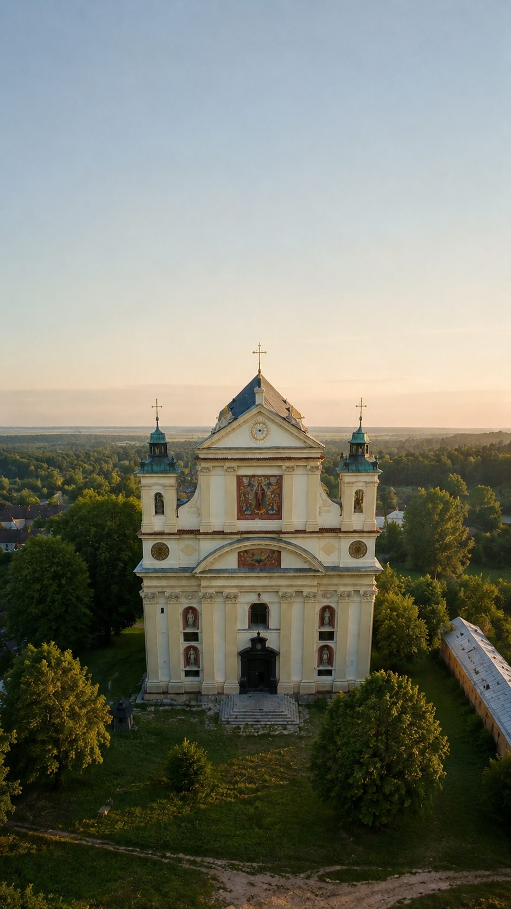

CSTL LIFE
v771 · 04.08 13:40
вівторок · 4 серпня
Добридень, Володимир
33°
Хмарно
Олика · відчувається 36°
У стрічці громади
🏰
Олицька міська рада
«Чому для отримання однієї послуги потрібно стільки документів?»